- Multimodal models can score well on vision benchmarks without looking at the image, by exploiting patterns in the questions and answers. Examples ↓
- Before releasing a benchmark, designers should “train on the test set”: cross-validate a text-only model on the test set's own questions and answer options. The gain over the same model's zero-shot score is what can be learned without looking. Method ↓
- That gain varies a lot: +18 points on VSI-Bench and +13 on CV-Bench, but little learnable signal on MMMU. Per-question scores flag which questions to inspect. Results ↓
Non-visual shortcuts
The usual safeguard is a “blind” test: evaluate the benchmark with vision disabled. Models still answer many questions. Some answers come from knowledge (“How tall is the refrigerator?” can be answered from memorized appliance sizes). Others come from statistical regularities in the benchmark's own questions and answers, which a model can learn instead of looking.
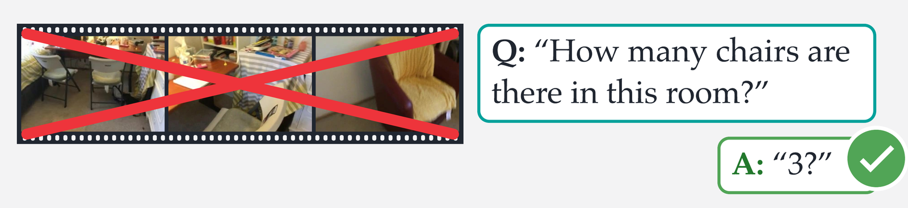
VSI-Bench counting
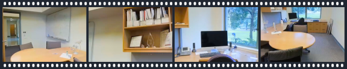
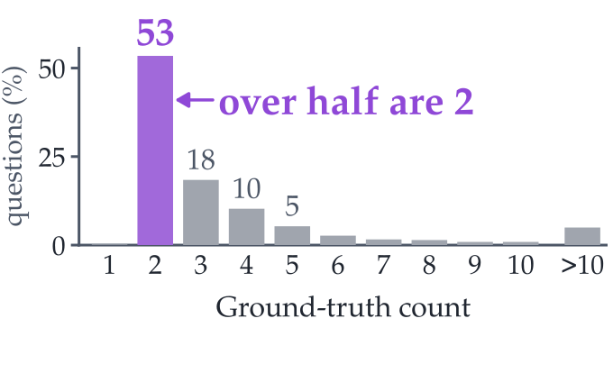
CV-Bench depth
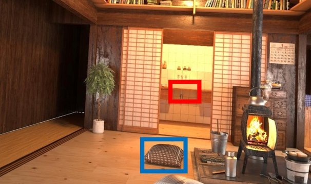
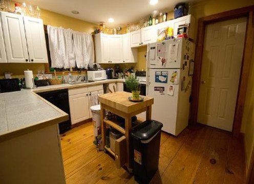
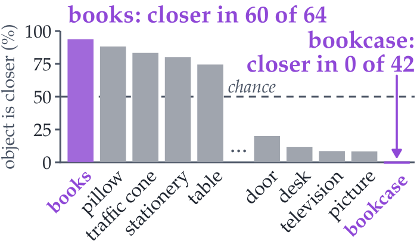
Models pick up these shortcuts without test access
Training data generated the same way carries the same regularities. Fine-tuning LLaVA-Video-7B on VSI-Train-10k, an in-distribution training set built with VSI-Bench's own pipeline, raises its blind score by 18.8 points, about as much as its vision score (+20.4).
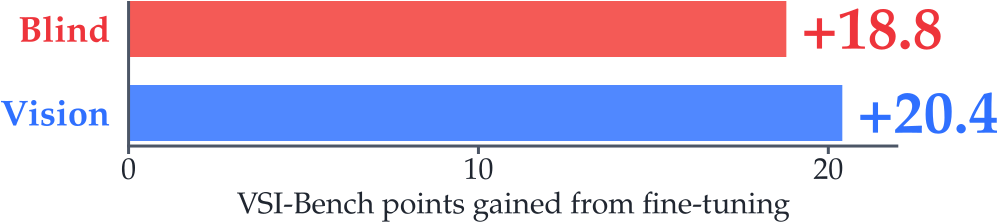
Test-set Stress-Test (TsT)
TsT applies k-fold cross-validation to the released test set, using only its text: questions, answer options, and metadata. A text-only model trains on k−1 folds and scores the held-out fold, so every question is scored by a model that never trained on it.
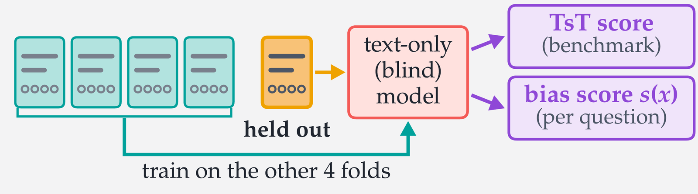
- TsT score: how much of the benchmark can be solved without vision. Its gain over the same model's zero-shot score is what can be learned from the test set itself; the zero-shot score is what the model already knows.
- Bias score s(x): each question's held-out score. A high score flags a question as likely answerable without looking.
TsT-LLM LoRA-tunes Qwen2-7B on the raw question and option text; it needs no feature engineering and works on non-templated benchmarks. TsT-RF, a random forest on hand-crafted features, is fast and interpretable for template-based benchmarks.
Why the test set? A diagnostic trained on separate in-distribution data reveals biases of the process that generated the data, but it may miss artifacts of the released test set, such as sampling quirks, templates, or human filtering. Most benchmarks ship only a test split anyway. The two checks are complementary.
TsT is run by the designer before release. It audits the benchmark; its scores are not model performance, and it is not a recipe for training models on test answers.
How much can be learned without looking varies a lot
Same model (blind Qwen2-7B, TsT-LLM), same scoring
On the template-based VSI-Bench and CV-Bench, much of the benchmark can be answered by learning patterns in its text alone. The result holds with folds grouped by scene: keeping all questions about one scene in the same fold, VSI-Bench still gains +17. On MMStar, which was curated to require vision, TsT finds only a small gain: it does not report large shortcuts where few are expected.
MMMU is the opposite case. TsT finds little learnable signal there, yet GPT-4o answers 52.3% of MMMU's multiple-choice questions correctly without the image. That points mostly to pretrained knowledge, and the blind scores of LLaVA-OneVision tell the same story: on MMMU they rise with model size, on VSI-Bench they stay flat. A blind score alone cannot tell knowledge from learnable patterns in the test set.
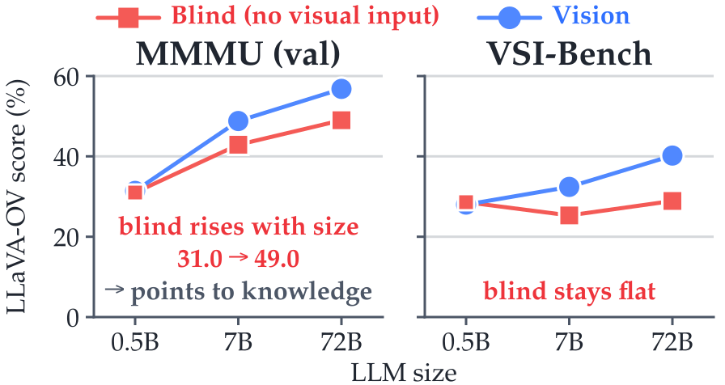
The TsT gain is what this probe learns: a lower bound on what a stronger diagnostic could exploit.
Pruning makes VSI-Bench lean more on vision
Iterative Bias Pruning (IBP) turns bias scores into a revised benchmark: remove the questions with the highest s(x), re-diagnose the rest, and repeat until a budget or threshold is reached. It follows AFLite-style adversarial filtering, and we compare it with removing the same number of questions at random.
Our released VSI-Bench-Debiased is a designer-in-the-loop pilot built with hand-written per-type filters, not the output of the full automated IBP procedure. It removes 2,768 of 5,130 questions (54%). On it, the fine-tuned LLaVA-Video-7B's blind score drops 12.7 points while its vision score drops only 8.4.
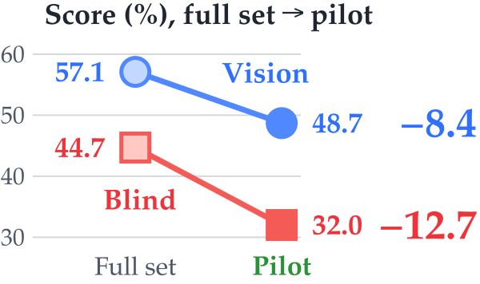
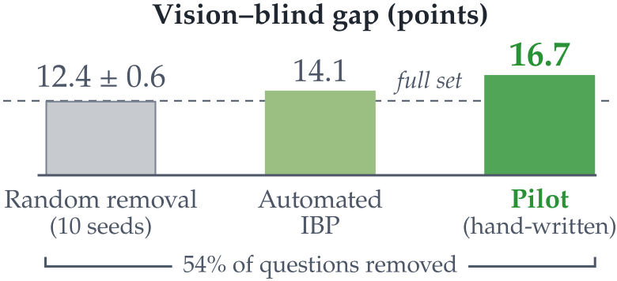
The vision–blind gap widens to 16.7, against 12.4 when a random 54% is removed. Automated per-type IBP, guided by TsT-RF scores at the same 54%, reaches 14.1. How much the gap widens varies by model. The debiased set changes the question-type mix, so report it alongside the full VSI-Bench rather than in place of it.
A checklist for benchmark designers
- Run blind zero-shot and k-fold TsT, and report both.
- Report random- and grouped-fold scores (by scene, video, or image).
- Inspect the highest-s(x) questions; rewrite, rebalance, or remove them.
- Re-diagnose after pruning, since pruning can create new answer priors.
- Report on both the full and debiased sets: Hugging Face
nyu-visionx/VSI-Bench, configdebiased; lmms-eval taskvsibench_debiased.
Stress-test your own benchmark
The code includes TsT-LLM, TsT-RF, IBP, and scripts that reproduce the paper. TsT-RF runs on a CPU in under a minute:
git clone https://github.com/vision-x-nyu/test-set-training.git
cd test-set-training
uv sync --frozen
uv run python -m TsT --benchmark vsi --group_col scene_name --output_dir outputs/vsi
TsT-LLM needs one GPU (uv sync --frozen --extra llm, then add --mode llm). For
a new benchmark, start from examples/custom_benchmark.py and the
guide.